Наближається Світле свято Пасхи, і так хочеться порадувати рідних і близьких не тільки писаними яйцями, а й красивою випічкою. Великодні фігурки з мастики – це оригінальні та цікаві прикраси для святкових страв. Милі жовтенькі курчатка і забавні зайчики здивують дорослих і особливо сподобаються малюкам.
Для чого підійдуть прикраси з мастики, і як правильно висушити готові фігурки
В якості прикраси пасхальних солодощів в основному використовується різнобарвна кондитерська посипка, яка встигла вже набриднути. У той же час фігурки з мастики на Великдень – простий у виготовленні, оригінальний і незаїжджений декор. Наприклад, за допомогою невеликих квіточок можна прикрасити сирну або здобну паску. А мастичні звірятка чудово підійдуть для прикрашання торта або створення святкової композиції.
Якщо фігурка з мастики має великий розмір, необхідно виділити час для сушіння, тому ліпити її слід заздалегідь. В ідеалі складові частини повинні сушитися окремо, їх слід накрити серветкою і залишити при кімнатній температурі на дві доби у сухому місці. З добре висохлих частин можна зробити готову фігуру.
Варто пам’ятати!
Не висушені належним чином фігури або їх заготівлі можуть потекти, втратити форму або потріскатися.
Якщо часу на сушку не так багато, процес можна прискорити. Для цього можна:
- покласти заготовки у відкриту духову шафу на п’ять хвилин при температурі 80°С;
- потримати їх під холодним повітряним струменем фена, при цьому не слід підносити його занадто близько до заготовок;
- скористатися цукровою пудрою або крохмалем при виготовленні і розкочуванні деталей.
Як ліпити кролика з морквою з мастики
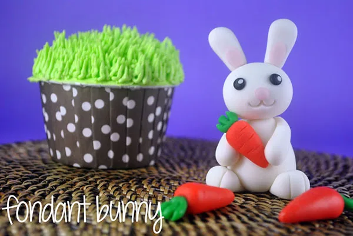
Для того щоб зробити своїми руками прикрасу у вигляді кролика з морквою, знадобляться:
- Мастика. Її можна зробити самостійно, використовуючи покрокові рецепти, а можна скористатися готовою масою. Для виготовлення прикраси знадобиться цукрова паста різних кольорів: білого, рожевого, чорного, зеленого і оранжевого.
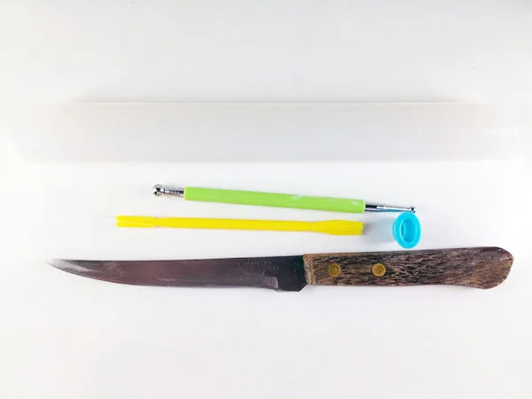
- Скалка і тонкий ніж. За допомогою цих інструментів легко відрізати і розкочувати з мастики пласт потрібної товщини і розміру.
- Стеки. Для роботи з мастикою зручно брати різні стеки – спеціальні інструменти для роботи з цукровою пастою. Вони являють собою невеликі палички з різними наконечниками, за допомогою яких дуже просто ліпити деталі і начерчувати фактуру фігурок. У разі їх відсутності не варто засмучуватися – можна скористатися підручними інструментами, наприклад звичайною зубочисткою.
Процес ліплення
Кролик з мастики з морквою – складова фігурка. При цьому морква як окремий елемент може бути самостійною прикрасою святкових страв. Процес ліплення можна розділити на дві основні частини.
Ліплення кролика
Для того щоб зробити прикрасу, потрібно:
- Виготовити частини фігурки.
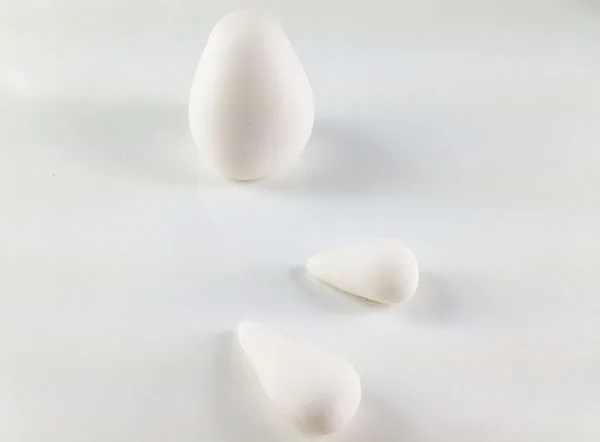
- З мастики білого кольору скачати невеликий довгастий тулуб – за формою він нагадує яйце.
- Заготівля для голови – трохи сплюснута куля.
- Передні лапи ліпляться з невеликих ковбасок, яким надають каплеподібну форму.
- Задні лапи виготовляються аналогічно, але вони менш довгі і більш широкі.
- Невеликі довгі вушка – приплющені джгути, що мають з одного боку плоский кінець, а з іншого – закруглення.
- Хвостик – маленька біла кулька.
- Промальовувати деталі.
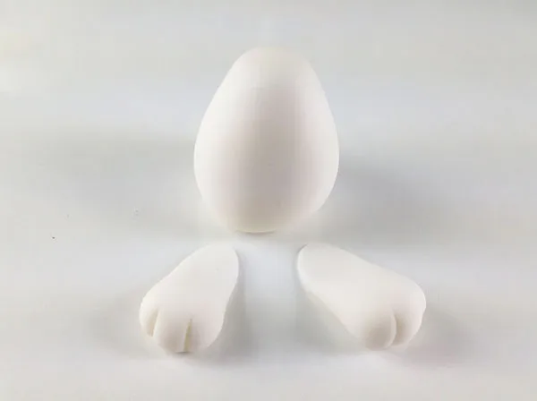
- За допомогою зубочистки злегка продавити дві борозни для трьох пальців на задніх лапках.
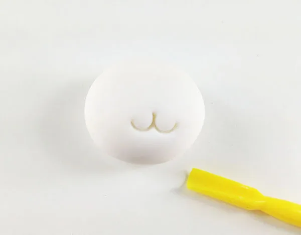
- Візуально відзначити місце, де буде знаходитися ніс. Від нього в сторони продавити два півкола – ротик.
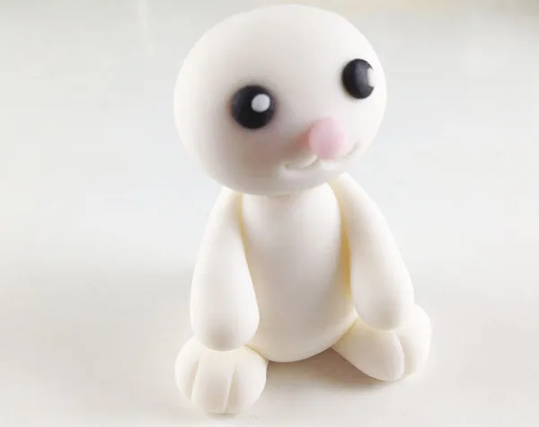
- У центрі мордочки наліпити ніс – маленьку приплющену кульку з рожевої мастики.
- Приліпити маленькі очі з чорної мастики і зробити на них «відблиски» з білої маси.
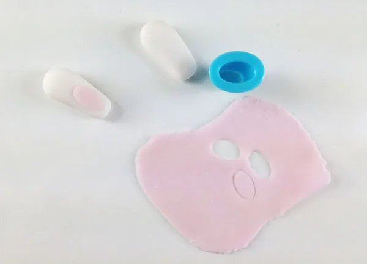
- Розкачати тонкий шар мастики рожевого кольору, і вирізавши два невеликих овали, наліпити їх на вушка.
- Зібрати фігурку.
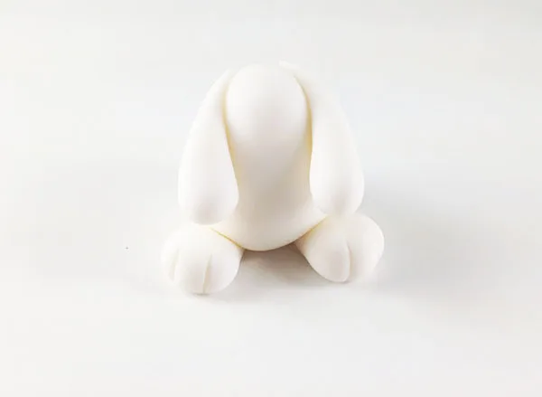
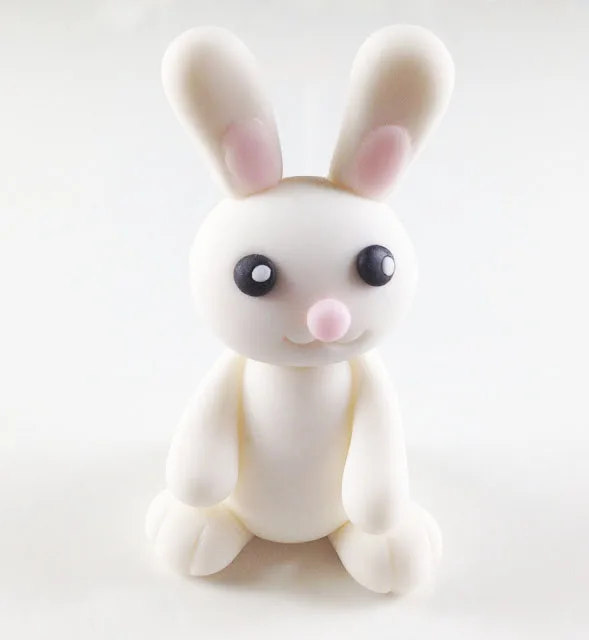
- Прикріпити до тулуба передні і задні лапки, потім приєднати голову з вушками і маленький хвостик.
Зверніть увагу!
Прикріпити голову до тулуба, а вуха – до голови можна, попередньо насадивши їх на зубочистку, ‒ тоді вони будуть добре триматися. Інші деталі потрібно приклеювати за допомогою невеликої кількості води або яєчного білка, змащуючи пензликом.
Ліплення морквини
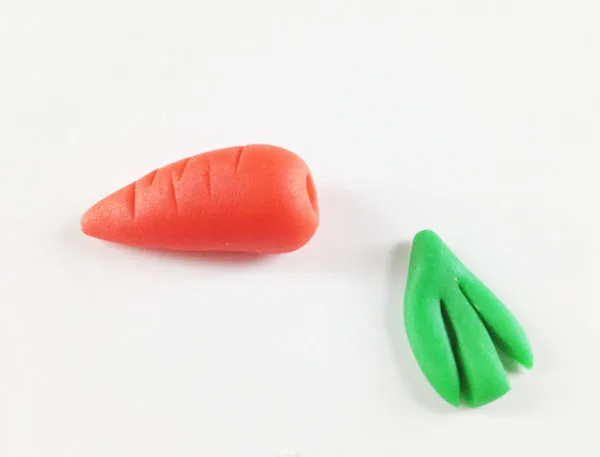
Морквина з мастики ліпиться досить просто, для її виготовлення потрібно скачати каплеподібну заготовку. Підійде маса оранжевого або морквяного кольору. Хвостик овоча робиться з невеликого пласта зеленої мастики, який прорізається ножем для імітації бадилля.
Важливо!
Щоб морквина була більш реалістичною, слід по всій її поверхні за допомогою зубочистки нанести горизонтальні риски.
Ще один спосіб ліплення видно на відео:
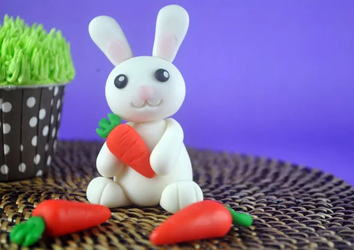
Коли морквина трохи обсохне, вкладіть її в лапки кролику, приклеївши за допомогою води або білка. Або ж використовуйте як самостійну прикрасу.
На Тортопедії описані і інші способи, як зліпити зайця. Подивіться, це дуже просто!
Приклади декорування
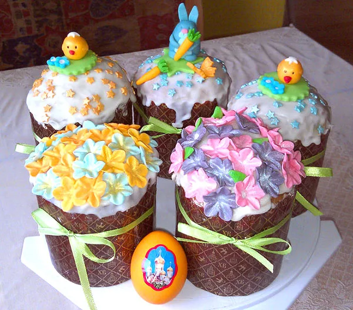
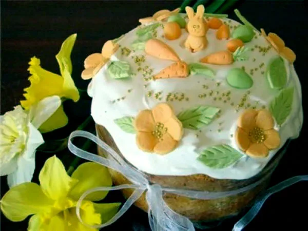
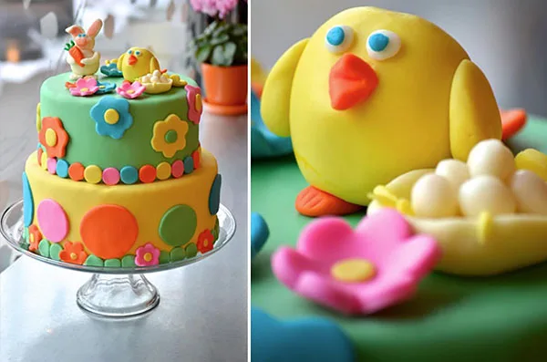
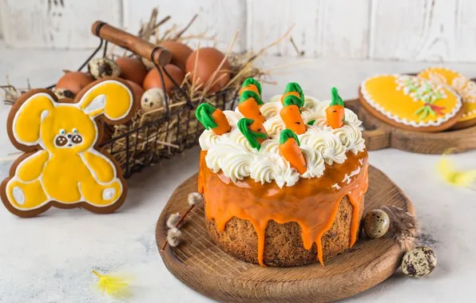
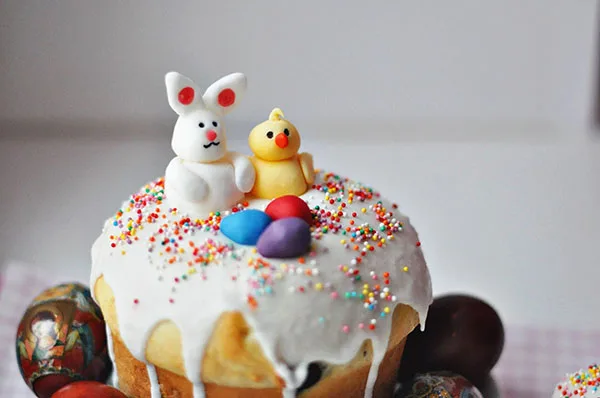
Як ліпити маленькі квіти на Великдень з мастики
Для виготовлення квіточок по майстер-класу знадобиться:
- Мастика. Чим яскравіше колір суміші, тим більш нарядною і красивою буде прикраса. Можна приготувати мастику самостійно в домашніх умовах.
- Скалка і ніж. За допомогою них зручно нарізати і розкочувати мастику.
- Спеціальні виїмки або плунжера у вигляді маленьких квітів. Про те, чим їх замінити, читайте нижче.
- Стек з кульовим наконечником.
Процес виготовлення
Виготовити маленькі квіти з мастики неважко, особливо якщо під рукою є необхідні інструменти.
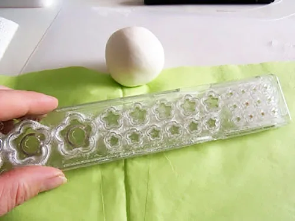
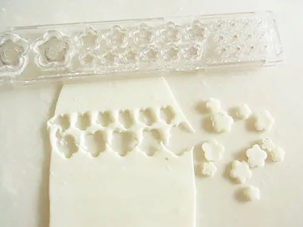
- Треба розкачати пласт маси обраного кольору.
- Вирізати маленькі квіточки за допомогою виїмок.
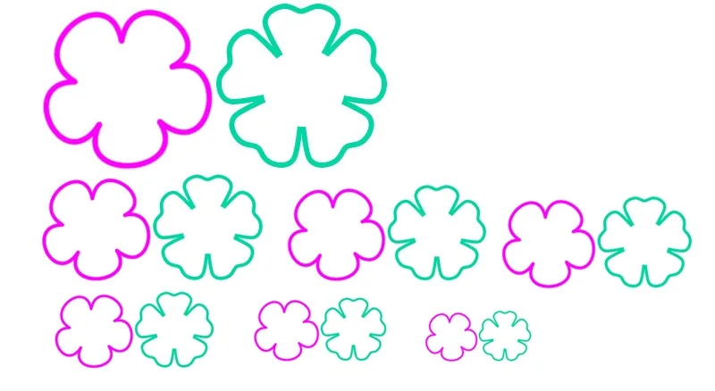
Порада!
Якщо у вас немає виїмок, можна спробувати вирізати квіти руками за допомогою ножа. Попередньо виріжте з паперу трафарет. Покладіть його на пласт мастики і обведіть ножем.
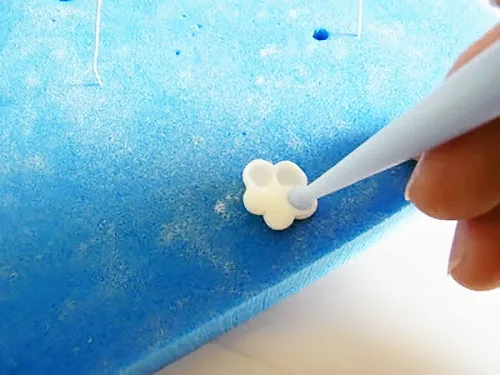
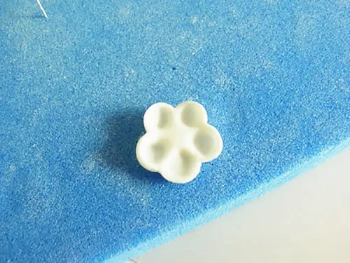
- Пелюстки квітки слід продавити кульковим стеком відповідного розміру.
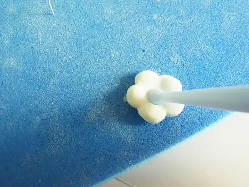
- Перевернути заготовку на іншу сторону і продавити серцевину.
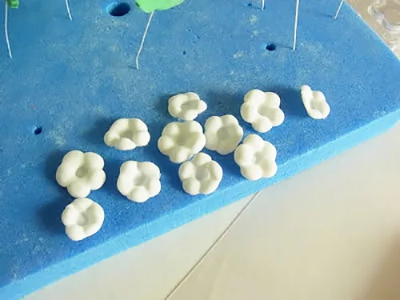
- Квіточки підсушити, а потім прикрасити паски.
Процес видно на відео:
Приклади оформлення
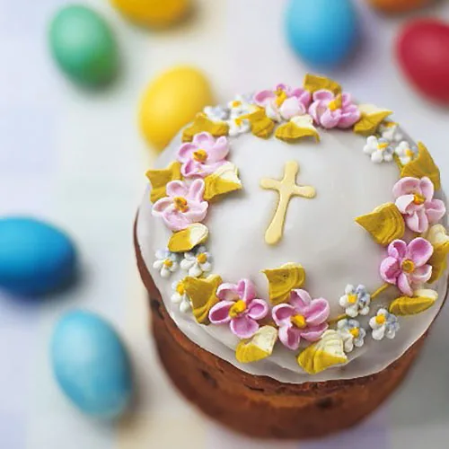
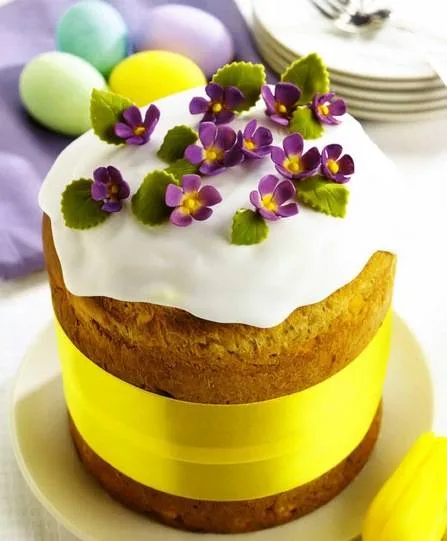
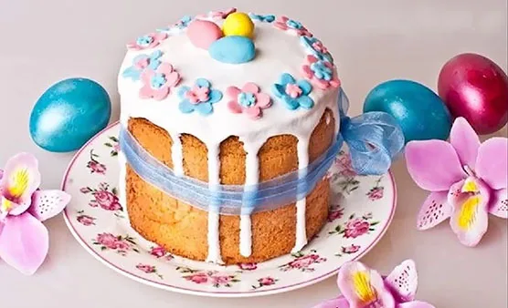
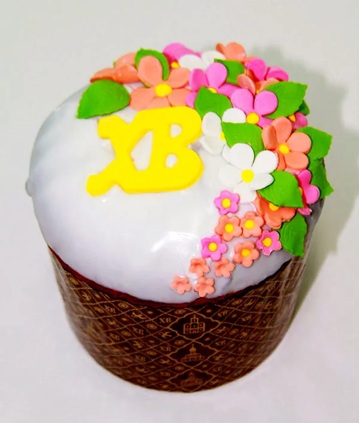
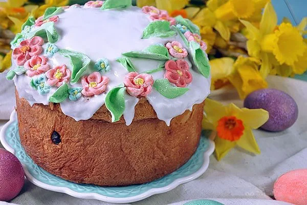
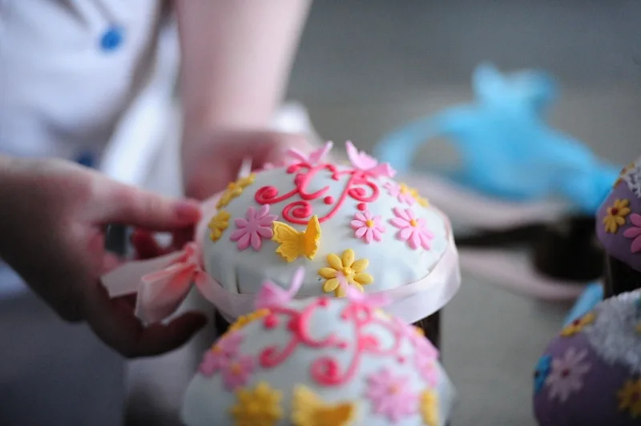
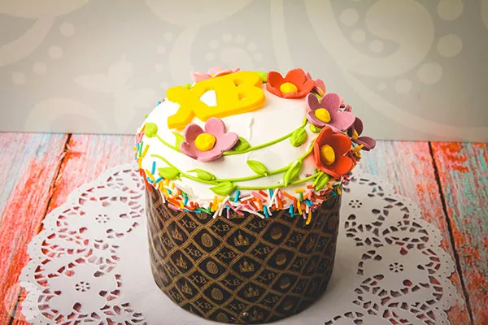
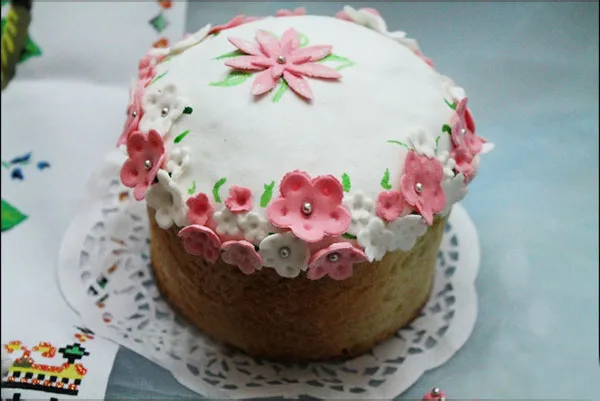
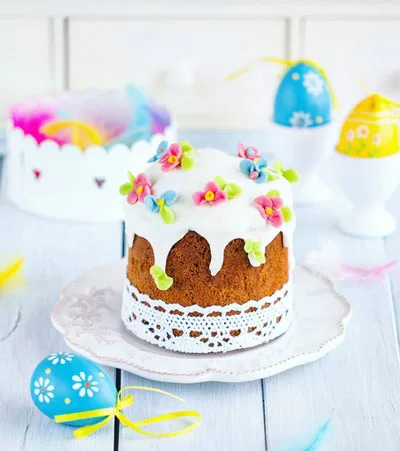
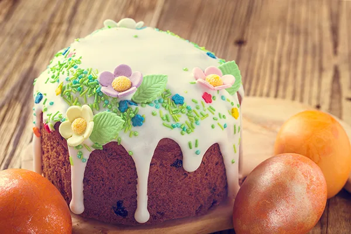
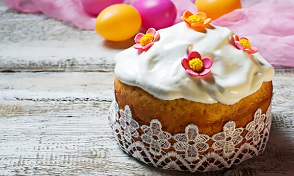
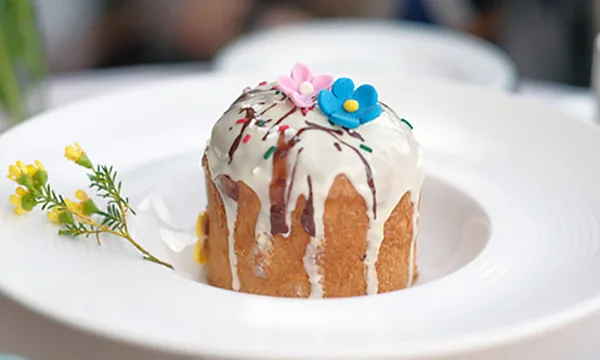
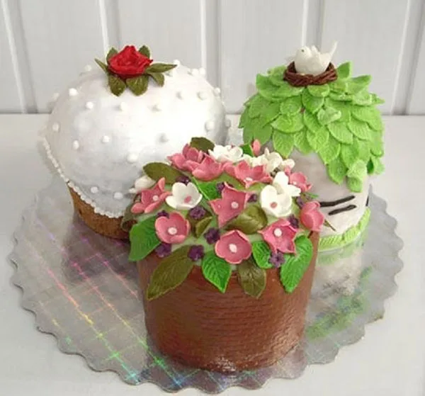
Як зліпити пасхальне курча з мастики
Для того щоб зліпити фігурку курчати, що вилупилося з яйця, знадобляться:
- Мастика. Необхідна маса жовтого, білого, помаранчевого кольору, а також трохи рожевої, фіолетової і чорної мастики для очей і бантика.
- Скалка і тонкий гострий ніж для роботи з масою.
- Стек з великим круглим наконечником.
- Зубочистка для начертання фактури і роботи з тонкими деталями фігурки.
Процес ліплення
Курча з мастики ліпиться за кілька етапів:

- Нарізати заготовки. Для виготовлення прикраси необхідно зробити:
- велику кулю з білої мастики – з неї буде ліпитися яєчна шкаралупа, в якій сидить курча;
- дві кулі з жовтої мастики для тулуба і голови курчати – вони повинні бути менше за розміром, ніж куля для шкаралупи;
- два однакових, невеликих овалу для крил;
- тонкий маленький джгутик, з якого буде вироблено чубчик курчати;
- маленький трикутник зі згладженими краями для дзьоба з мастики оранжевого кольору;
- три маленьких кульки, дві фіолетові і одна поменше, рожевого кольору, для бантика.
- Зліпити шкаралупу.
- У білій кулі продавити середину так, щоб вийшла половина яйця. Це зручно зробити за допомогою стека з великим круглим наконечником.
- Краї яйця прорізати ножем, щоб вийшли гострі вершини, що імітують розбиту шкаралупу.
Корисно знати!
Якщо під рукою не виявилося стека з великим круглим наконечником, нічого страшного. Можна продавити заготовку пальцями, при цьому слід добре згладити залишені відбитки.
- Виліпити курча.
- Одну жовту кулю помістити в готову шкаралупу – вона буде тулубом.
- Іншу жовту кулю прикріпити на неї зверху – вона буде головою пташки. Попередньо вставте в тулуб зубочистку, а на неї вже насадіть голову.
- На голові за допомогою зубочистки продавити два поглиблення для очей і заповнити їх мастикою чорного кольору.
- Зробити по три точки на щічках курчати.
- Потім прикріпити помаранчеву заготовку дзьоба і продавити зубочисткою дві невеликі дірочки – ніздрі.
- Дві овальні заготовки трохи сплюснути, нанести на них зубочисткою три поздовжні смужки. Злегка зігнувши їх уздовж осі, прикріпити до тулуба курчати, спираючи їх на шкаралупу.
- Виліпити деталі.
- Нарізати тонкий джгутик на дві або три невеликі частини і, з’єднавши їх у основи, акуратно приліпити до голови. Таким чином, у курчати повинен вийти невеликий чубчик.
- З трьох маленьких кульок мастики ліпимо бантик. Серединка – рожева кулька, по краях банта – фіолетові заготовки. За допомогою зубочистки для більшої реалістичності промальовувати складки на бантику.
Готова фігурка курчати підійде не тільки для прикраси пасок. Нею можна прикрашати торти, капкейки та іншу випічку.
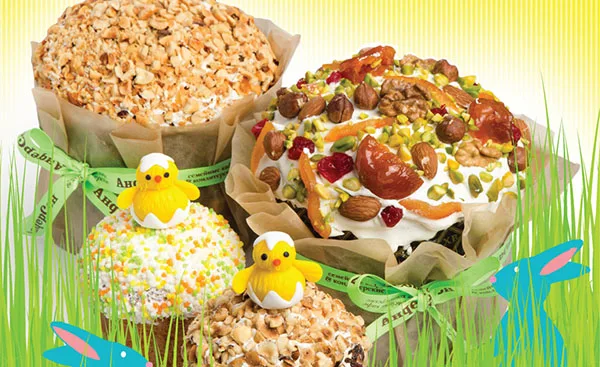
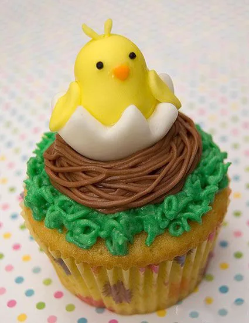
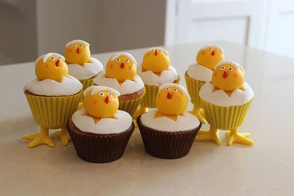
Альтернативний варіант ліплення на відео: